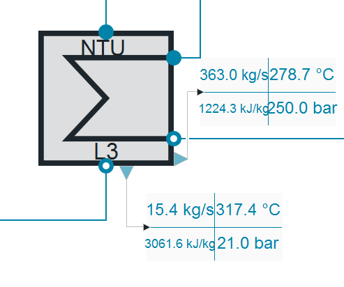
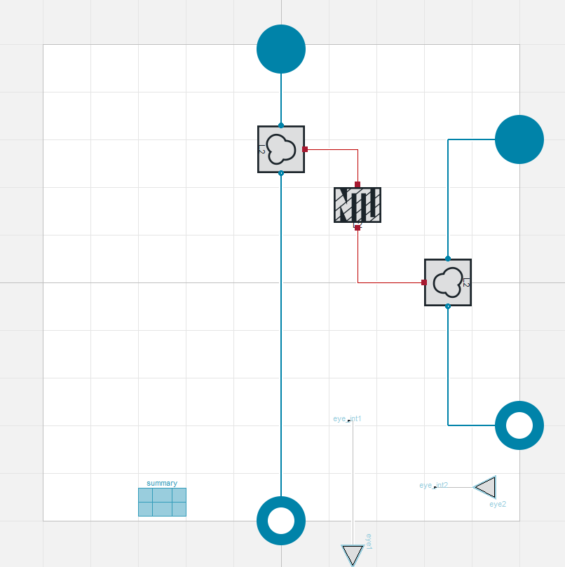
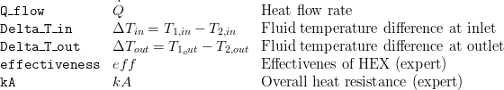
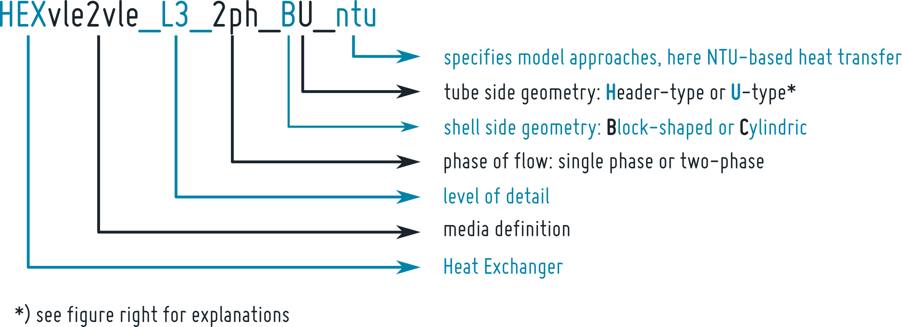
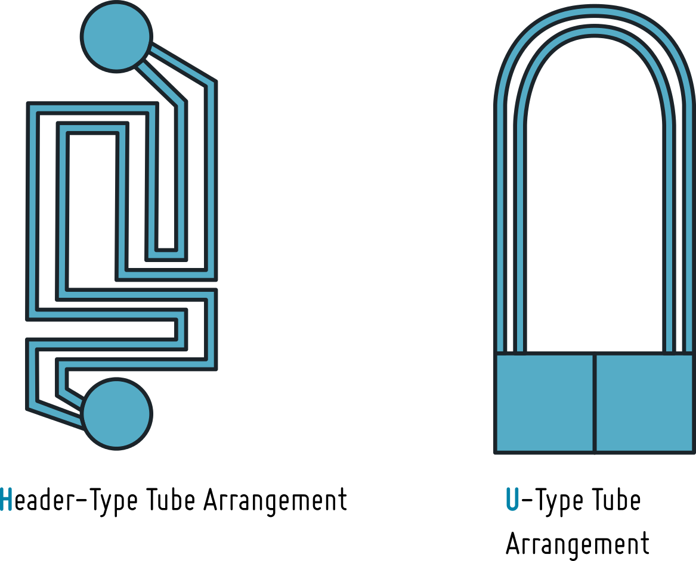

HEXvle2vle L3 1ph BU ntu
Created Monday 10 June 2013
A block-shaped desuperheater model with an U-type tube bundle. Heat resistance is calculated by NTU-method.
1. Purpose of Model

This model is well suited to model slow transients of commonly designed desuperheaters where no phase change happens. If large-scale short-term transients occur, e.g. as can be found during start-up the model might give imprecise results since the basic assumptions of the NTU approach (applied for calculation of heat resistance) can be violated.
2. Level of Detail, Physical Effects Considered and Physical Insight
2.1 Level of Detail
Referring to Brunnemann et al. [1], this model refers to the level of detail L3 because the system is modelled with the use of balance equations applied to two different zones of the component: liquid condensate at tube side, vapour volume at shell side.
2.2 Physical Effects Considered
- dynamic conservation of energy (neglecting kinetic energy terms) in desuperheating and cooling flows
- dynamic conservation of mass (neglecting kinetic energy terms) in desuperheating and cooling flows
- taking static pressure differences due to friction losses and geostatic into account
- calculation of heat transfer resistance between the two flows is calculated according to a NTU model
- heat transfer from desuperheating steam to cooling water, losses to the ambience are neglected
- pressure losses due to friction in desuperheating and cooling flows
- no phase separation at the desuperheating side
2.3 Level of Insight
Heat Transfer
shell side
- Basics:ControlVolumes:Fundamentals:HeatTransport:Generic HT:Constant L2 : a constant heat transfer coefficient
- Basics:ControlVolumes:Fundamentals:HeatTransport:Generic HT:IdealHeatTransfer L2 : ideal heat transfer, i.e. kc is infinite (see also the remarks for usage)
- Basics:ControlVolumes:Fundamentals:HeatTransport:Generic HT:CharLine L2 : heat transfer coefficient calculated from nominal value and a mass flow dependent correction
- Basics:ControlVolumes:Fundamentals:HeatTransport:VLE HT:NusseltShell1ph L2 :heat transfer coefficient based on shell geometry, media data and flow regime - Nusselt number
tube side:
- Basics:ControlVolumes:Fundamentals:HeatTransport:Generic HT:Constant L2 : a constant heat transfer coefficient
- Basics:ControlVolumes:Fundamentals:HeatTransport:Generic HT:IdealHeatTransfer L2 : ideal heat transfer, i.e. kc is infinite (see also the remarks for usage)
- Basics:ControlVolumes:Fundamentals:HeatTransport:Generic HT:CharLine L2 : heat transfer coefficient calculated from nominal value and a mass flow dependent correction
- Basics:ControlVolumes:Fundamentals:HeatTransport:VLE HT:NusseltPipe1ph L2 :heat transfer coefficient based on tube geometry, media data and flow regime - Nusselt number
Pressure Loss
shell side
- Basics:ControlVolumes:Fundamentals:PressureLoss:Generic PL:NoFriction L2 : friction free flow between inlet and outlet
- Basics:ControlVolumes:Fundamentals:PressureLoss:Generic PL:LinearPressureLoss L2 : Linear pressure loss based on nominal values, different zones are seen in parallel, pressure loss is located at flanges
- Basics:ControlVolumes:Fundamentals:PressureLoss:Generic PL:QuadraticNominalPoint L2 : Quadratic pressure loss based on nominal values, different zones are seen in parallel, pressure loss is located at flanges, density independent
- Basics:ControlVolumes:Fundamentals:PressureLoss:VLE PL:PressureLossCoefficient L2 : Density dependent pressure loss based on zeta value
- Basics:ControlVolumes:Fundamentals:PressureLoss:VLE PL:QuadraticNominalPoint L2 : Density dependent, quadratic pressure loss based on nominal values
tubes side
- Basics:ControlVolumes:Fundamentals:PressureLoss:Generic PL:NoFriction L2 : friction free flow between inlet and outlet
- Basics:ControlVolumes:Fundamentals:PressureLoss:Generic PL:LinearPressureLoss L2 : Linear pressure loss based on nominal values, different zones are seen in parallel, pressure loss is located at flanges
- Basics:ControlVolumes:Fundamentals:PressureLoss:Generic PL:QuadraticNominalPoint L2 : Quadratic pressure loss based on nominal values, different zones are seen in parallel, pressure loss is located at flanges, density independent
- Basics:ControlVolumes:Fundamentals:PressureLoss:VLE PL:PressureLossCoefficient L2 : Density dependent pressure loss based on zeta value
- Basics:ControlVolumes:Fundamentals:PressureLoss:VLE PL:QuadraticNominalPoint L2 : Density dependent, quadratic pressure loss based on nominal values
Phase Separation
shell side
Basics:ControlVolumes:Fundamentals:SpatialDistributionAspects:IdeallyStirred : ideally mixed phases, no phase separation
tube side:
Basics:ControlVolumes:Fundamentals:SpatialDistributionAspects:IdeallyStirred : ideally mixed phases
Heat Exchanger Type
- Basics:ControlVolumes:SolidVolumes:Fundamentals:HeatExchangerTypes:CounterFlow
- Basics:ControlVolumes:SolidVolumes:Fundamentals:HeatExchangerTypes:CrossCounterFlow
- Basics:ControlVolumes:SolidVolumes:Fundamentals:HeatExchangerTypes:CrossFlow
- Basics:ControlVolumes:SolidVolumes:Fundamentals:HeatExchangerTypes:ParallelFlow
- Basics:ControlVolumes:SolidVolumes:Fundamentals:HeatExchangerTypes:TubeBundle
3. Limits of Validity
- only small transients are allowed due to application of NTU-based wall model.
- chosen NTU-method is only considering one heat transfer zone (for one phase flow), see remarks for usage
- no separate balancing of phases at shell and tube side
- no flow reversal is supported
4. Interfaces
5. Nomenclature
- no model specific nomenclature -
6. Governing Equations
6.1 System Description and General model approach

This model is composed by instantiation of the following classes:
- Basics:ControlVolumes:FluidVolumes:VolumeVLE L2 volume of the condensate volume in the pipes, with a PipeGeometry
- Basics:ControlVolumes:FluidVolumes:VolumeVLE L2 volume of the superheated steam volume in the shell side, with a HollowBlockWithTubes geometry
- Basics:ControlVolumes:SolidVolumes:NTU L2 to model the heat transfer resistance and the temperature distribution in the heat exchanger
6.2 General Model Equations
Summary
A record summarising the most important variables is provided. Please be aware of the boolean showExpertSummary in the parameter dialog tab "Summary and Visualisation". Setting this parameter to true will give you more detailed information on the components behaviour. The summary consists of the outline:

and the summaries of the class instances named in section 6.1
7. Remarks for Usage
7.1 Naming
The naming of heat exchangers in this package follows some specific form that is defined as follows:

7.2 Heat Transfer Modelling
In most cases the heat transfer from one fluid to the other will be dominated by the heat transfer at one of fluid boundary layers. In that cases the heat transfer coefficient α at this side will be considerably smaller than on the other side. From a numerical point of view it is disadvantageous to have very high (close to infinite) heat transfer coefficients on either sides. If you want to take nearly ideal heat transfer at one of the sides into account please consider the corresponding replaceable model instead of defining arbitrary large heat transfer coefficients in the model.
7.3 Phase Change
Since the model has only one state on the tube side and the shell side respectively phase change is in principally possible but will result in low accuracy during the phase change transients. Furthermore, phase separation is not supported. To model phase change and separation on the shell side consider Components:HeatExchangers:HEXvle2vle L3 2ph BU ntu.
8. Validation
9. References
[1] Johannes Brunnemann and Friedrich Gottelt, Kai Wellner, Ala Renz, André Thüring, Volker Röder, Christoph Hasenbein, Christian Schulze, Gerhard Schmitz, Jörg Eiden: "Status of ClaRaCCS: Modelling and Simulation of Coal-Fired Power Plants with CO2 capture", 9th Modelica Conference, Munich, Germany, 2012
10. Authorship and Copyright Statement for original (initial) Contribution
Author:
DYNCAP/DYNSTART development team, Copyright 2011 - 2020.
Remarks:
This component was developed during DYNCAP/DYNSTART projects.
Acknowledgements:
ClaRa originated from the collaborative research projects DYNCAP and DYNSTART. Both research projects were supported by the German Federal Ministry for Economic Affairs and Energy (FKZ 03ET2009 and FKZ 03ET7060).
CLA:
The author(s) have agreed to ClaRa CLA, version 1.0. See https://claralib.com/CLA
By agreeing to ClaRa CLA, version 1.0 the author has granted the ClaRa development team a permanent right to use and modify his initial contribution as well as to publish it or its modified versions under Modelica License 2.
11. Version History
- 2013 - v 0.1.0 - initial implementation - A.Renz, F.Gottelt, XRG Simulation
- 2016 - v 1.1.0 - allowed user defined flow orientation at shell side and heatExchangerType
- 08.01.2019 -v 1.4.0 - added kA-value to summary